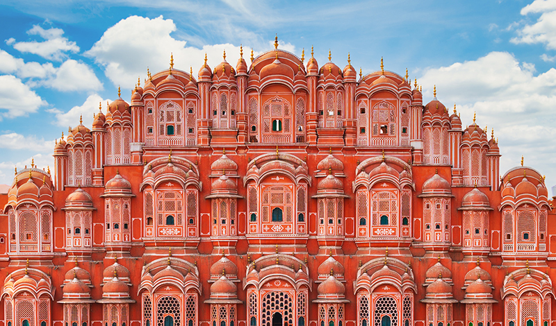
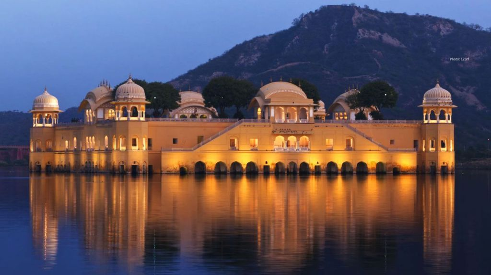

Jaipur, the capital of Rajasthan, is famously known as the “Pink City” for its distinct pink-colored buildings that symbolize hospitality. Founded in 1727 by Maharaja Sawai Jai Singh II, Jaipur is a perfect blend of royal heritage and vibrant culture.
The city is dotted with majestic forts and palaces like Amer Fort, City Palace, Hawa Mahal, and Jantar Mantar (a UNESCO World Heritage Site). Jaipur is also a part of the Golden Triangle tourist circuit, along with Delhi and Agra.
The city is renowned for its traditional handicrafts, jewelry, textiles, and mouthwatering Rajasthani cuisine. Its colorful bazaars, lively festivals, and royal architecture make Jaipur not just a historical city but also a modern hub that beautifully preserves its regal past.
 